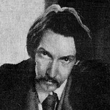

About Treasure Island
An adventure novel by Scottish author Robert Louis Stevenson, Treasure Island tells a story of “buccaneers and buried gold”. Children's magazine Young Folks originally serialized the tale between 1881 through 1882 under the title Treasure Island, or The Mutiny of the Hispaniola, credited to the pseudonym “Captain George North”.
Treasure Island is traditionally considered a coming-of-age story, and is noted for its atmosphere, characters, and action. It is also noted as a wry commentary on the ambiguity of morality—as seen in Long John Silver —unusual for children's literature. It is one of the most frequently dramatized of all novels. Its influence is enormous on popular perceptions of pirates, including such elements as treasure maps marked with an “X”, schooners, the Black Spot, tropical islands, and one-legged seamen bearing parrots on their shoulders.
Characters
-

Jim Hawkins
Jim is the narrator of the story and is around years of age. Though goodhearted and competent, he uncovers the plan for a pirate mutiny making rash decisions but also displaying courage.
-
“Long John” Silver
A tavern-keeper in Bristol; the ship’s cook; and another pirate that has a wooden leg and a pet parrot called “Captain Flint” on his shoulder. Silver haunts Jim's memories after the adventure.
-

Ben Gunn
Ben Gunn The “man of the island,” and a reformed pirate. He has been marooned on Treasure Island for three years.